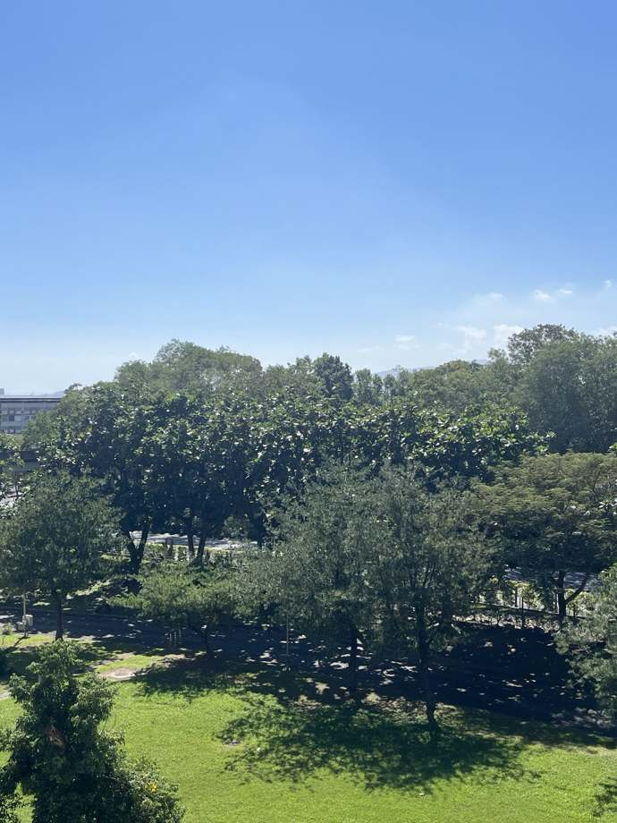
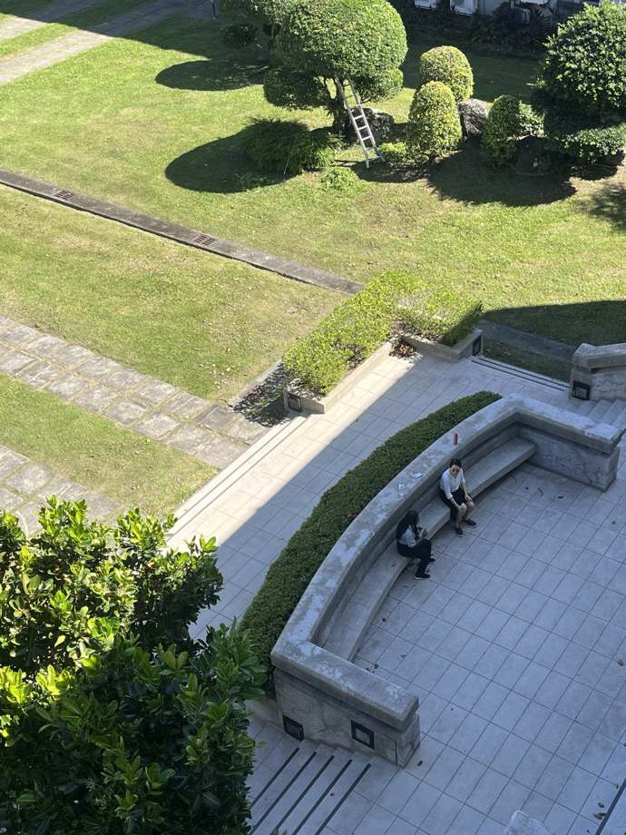
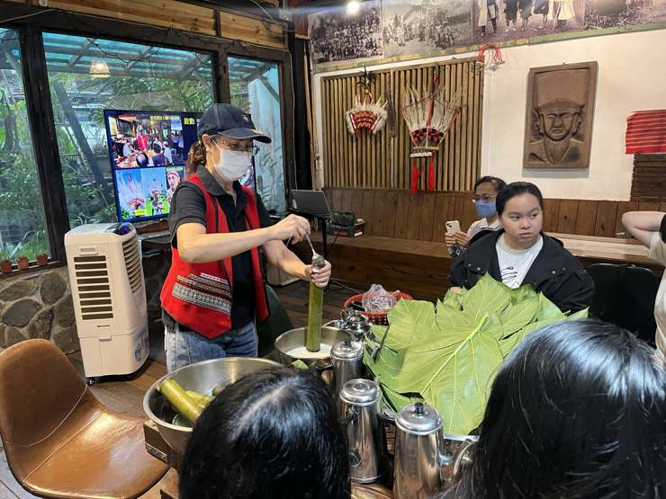
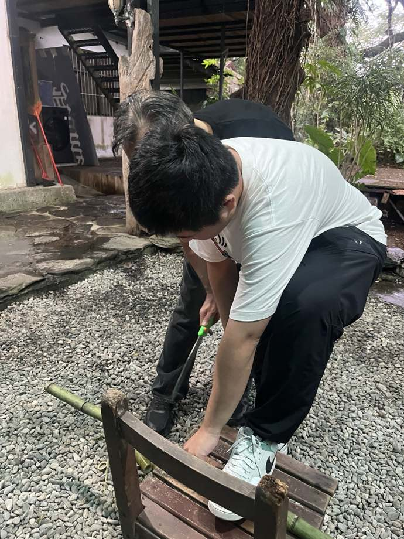
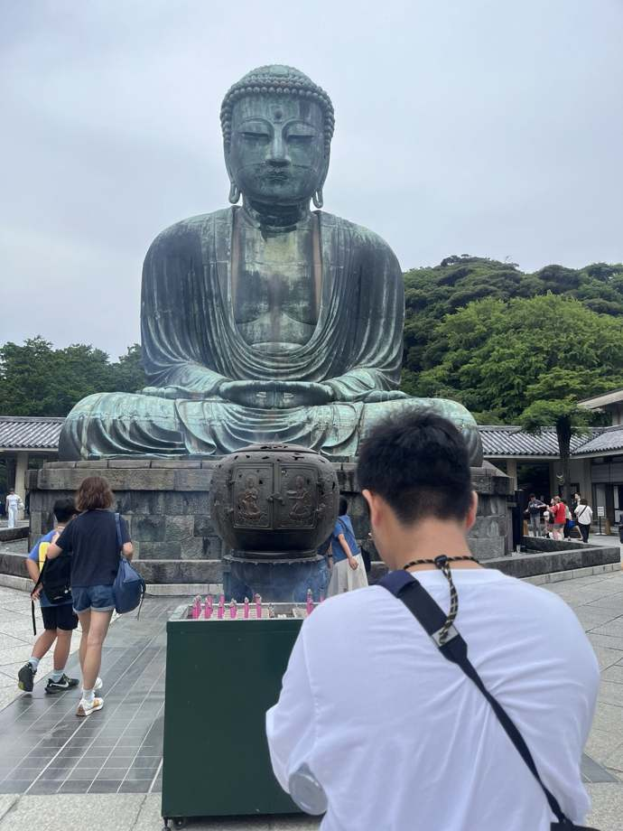

企業管理與策略
理解企業運作、管理決策與團隊組織。
在慈濟大學經營管理學系，學習不只是知識的累積，也是一段從觀察、思考到行動的歷程。結合管理專業、人文關懷與實務探索，培養面對未來的多元視野。
從企業運作、消費市場到社會議題，管理是一門結合理論、分析和行動的專業。
本網站以學生觀點介紹經營管理的學習樣貌。透過課程討論、實務企劃與在地觀察，探索組織、品牌、資源與社會之間的關係。
實際課程及招生資訊，請以慈濟大學系所官方公告為準。
從組織與策略角度理解問題、規劃方向。
結合顧客需求、品牌設計與行銷方法。
在提案與執行過程中練習溝通協調。
把關懷與永續觀點帶進日常決策。
從專業基礎到實務應用，將不同能力串聯為完整的管理視野。
理解企業運作、管理決策與團隊組織。
從消費者觀察出發，設計溝通與行銷企劃。
透過數據與財務觀念輔助分析及評估。
經歷企劃、協作、執行到成果分享的完整過程。
以實際拍攝的影像，記錄校園裡的建築、綠意與生活片刻。


從現場觀察、文化體驗到影像紀錄，留下學習旅程中的不同視角。

透過走訪與參與，理解文化如何融入在地生活。

從實際操作中練習觀察細節與解決問題。

以照片記下不同場域帶來的觀察與感受。
影片展示區已預留，未來可放入課程紀錄、學生訪談與成果發表影片。所有影片請儲存於 graph 資料夾。
慈濟大學經營管理學系｜花蓮